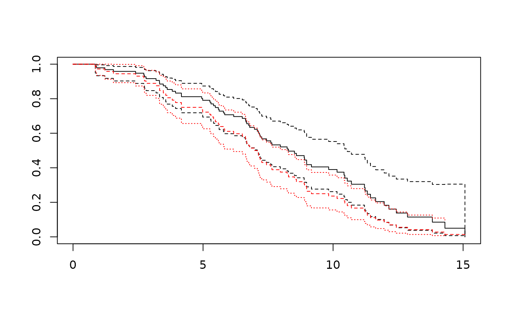
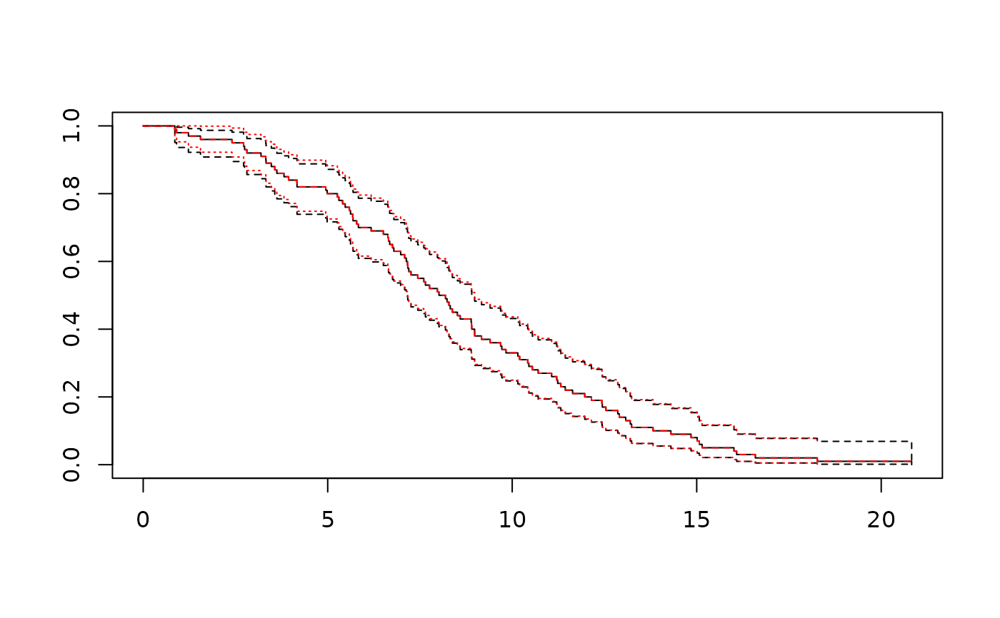

Nonparametric estimator of survival from right-truncated, uncensored data
Source:R/survrtrunc.R
survrtrunc.RdEstimates the survivor function from right-truncated, uncensored data by reversing time, interpreting the data as left-truncated, applying the Kaplan-Meier / Lynden-Bell estimator and transforming back.
Arguments
- t
Vector of observed times from an initial event to a final event.
- rtrunc
Individual-specific right truncation points, so that each individual's survival time
twould not have been observed if it was greater than the corresponding element ofrtrunc. If any of these are greater thantmax, then the actual individual-level truncation point for these individuals is taken to betmax.- tmax
Maximum possible time to event that could have been observed.
- data
Data frame to find
tandrtruncin. If not supplied, these should be in the working environment.- eps
Small number that is added to
tbefore implementing the time-reversed estimator, to ensure the risk set is consistent between forward and reverse time scales. It should be just large enough thatt+epsis not==t. This should not need changing from the default of 0.001, unlesstare extremely large or small and the data are rounded to integer.- conf.int
Confidence level, defaulting to 0.95.
Value
A list with components:
time Time points where the estimated survival changes.
surv Estimated survival at time, truncated above at
tmax.
se.surv Standard error of survival.
std.err Standard error of -log(survival). Named this way for consistency with survfit.
lower Lower confidence limits for survival.
upper Upper confidence limits for survival.
Details
Note that this does not estimate the untruncated survivor function - instead it estimates the survivor function truncated above at a time defined by the maximum possible time that might have been observed in the data.
Define \(X\) as the time of the initial event, \(Y\) as the time of the final event, then we wish to determine the distribution of \(T = Y- X\).
Observations are only recorded if \(Y \leq t_{max}\). Then the
distribution of \(T\) in the resulting sample is right-truncated by
rtrunc \( = t_{max} - X\).
Equivalently, the distribution of \(t_{max} - T\) is left-truncated, since
it is only observed if \(t_{max} - T \geq X\). Then the standard
Kaplan-Meier type estimator as implemented in
survfit is used (as described by Lynden-Bell, 1971)
and the results transformed back.
This situation might happen in a disease epidemic, where \(X\) is the date of disease onset for an individual, \(Y\) is the date of death, and we wish to estimate the distribution of the time \(T\) from onset to death, given we have only observed people who have died by the date \(t_{max}\).
If the estimated survival is unstable at the highest times, then consider
replacing tmax by a slightly lower value, then if necessary, removing
individuals with t > tmax, so that the estimand is changed to the
survivor function truncated over a slightly narrower interval.
References
D. Lynden-Bell (1971) A method of allowing for known observational selection in small samples applied to 3CR quasars. Monthly Notices of the Royal Astronomical Society, 155:95–118.
Seaman, S., Presanis, A. and Jackson, C. (2020) Review of methods for estimating distribution of time to event from right-truncated data.
Examples
## simulate some event time data
set.seed(1)
X <- rweibull(100, 2, 10)
T <- rweibull(100, 2, 10)
## truncate above
tmax <- 20
obs <- X + T < tmax
rtrunc <- tmax - X
dat <- data.frame(X, T, rtrunc)[obs,]
sf <- survrtrunc(T, rtrunc, data=dat, tmax=tmax)
plot(sf, conf.int=TRUE)
## Kaplan-Meier estimate ignoring truncation is biased
sfnaive <- survfit(Surv(T) ~ 1, data=dat)
lines(sfnaive, conf.int=TRUE, lty=2, col="red")

## truncate above the maximum observed time
tmax <- max(X + T) + 10
obs <- X + T < tmax
rtrunc <- tmax - X
dat <- data.frame(X, T, rtrunc)[obs,]
sf <- survrtrunc(T, rtrunc, data=dat, tmax=tmax)
plot(sf, conf.int=TRUE)
## estimates identical to the standard Kaplan-Meier
sfnaive <- survfit(Surv(T) ~ 1, data=dat)
lines(sfnaive, conf.int=TRUE, lty=2, col="red")
